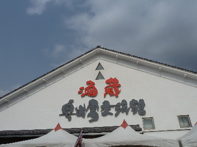
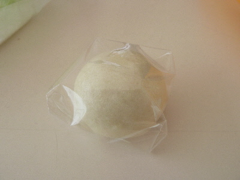
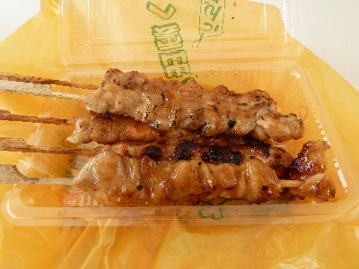
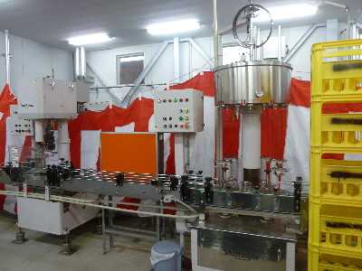
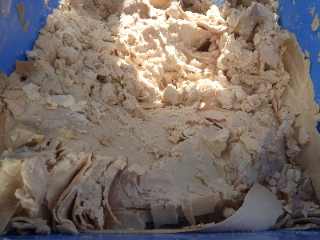
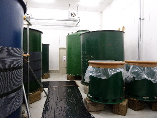
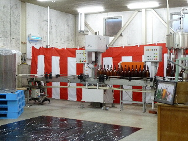
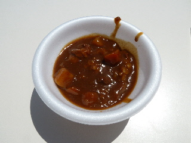

奥出雲の酒蔵参観日に行きました。
2016/04/10
天気がいいので、奥出雲町のイベントに行きました。

道の駅
酒蔵奥出雲交流館です。

行ったら出来たての酒まんじゅうがもらえました。
温かくてお酒のいい香りがして美味しかったです。

イベントなので、テントで色々販売していました。
私は焼き鳥を購入。お酒に合うけど、お酒は飲みませんでした。

酒蔵参観日なので、工場見学もしました。
丁寧な案内があったので、お酒造りの事がよくわかりました。
いい勉強になりました。

道の駅でお買い物をしたら、酒粕詰め放題の券をいただきました。
これをビニール袋に詰めて帰りました。
道の駅酒蔵で酒蔵参観日
2012/04/14
奥出雲町にある道の駅「酒蔵」の酒蔵参観日っていうイベントに行きました。
奥出雲酒造の工場見学をしました。

酒蔵っていうとレトロな感じで、土壁の蔵を想像するんですが、ここのは新しいので工場って感じでした。

瓶詰もこの場所でやっていました。
沢山の種類のお酒をきき酒できましたが、私は飲まないで甘酒を飲みました。
甘酒でも、プレーン、抹茶、ココア、さくらと種類があり、試飲が楽しめました。
さくらの甘酒は軽めで美味しかったです。

上の写真は酒蔵の純米酒カレーです。
レトルトで販売しているものの試食が出来ました。美味しかったです。
他にも「酒蔵秘伝 根菜粕汁」や「甘酒葛餅」の試食が出来ました。
特設テントでも特産品を販売していたので、美味しいものを色々食べれて楽しかったです。
道の駅酒蔵 奥出雲交流館
2008/11/23
地元のお酒がずらーっと並んでたり、地元の特産品があったり、全国のちょっと変わったお菓子があったりと、見て、試食して、試飲して楽しい道の駅です。
建物が大きいので、置いてある商品が多くていいですね。色んなものがあるんだなーって感心しながら見てまわりました。
カウンターでお酒が試飲できるんですが、車を運転していたので止めました。
奥出雲酒造の本格米焼酎「砂の器」は好きですが、720mlで2000円してちょっと高いので今回は買うのを止めました。次いったら買おうかな？